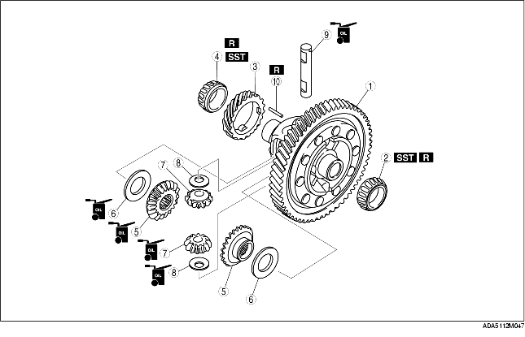
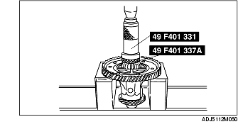
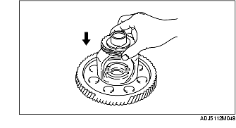
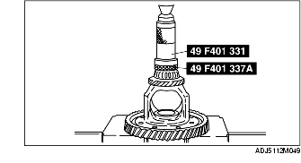
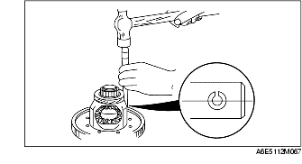
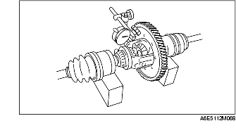

Differential assembly
B3E051527100103
1. Assemble in the order indicated in the table.

|
1
|
Ring gear and gear case component
|
|
2
|
Bearing (ring gear side)
|
|
3
|
Speedometer drive gear
|
|
4
|
Bearing (side opposite ring gear)
|
|
5
|
Side gear
|
|
6
|
Thrust washer
|
|
7
|
Pinion gear
|
|
8
|
Thrust washer
|
|
9
|
Pinion shaft
|
|
10
|
Roll pin
(See Roll Pin Assembly Note.)
|
Bearing (Ring Gear Side) Assembly Note
1. Install the new bearing using the SSTs.

Speedometer Drive Gear Assembly Note
1. Install the speedometer drive gear as shown in the figure.

Bearing (Side Opposite Ring Gear) Assembly Note
1. Install the speedometer drive gear.
2. Install the new bearing using the SSTs.

Roll Pin Assembly Note
1. Install the new roll pin as shown in the figure to hold the pinion shaft.

2. Measure the backlash by the following procedure.
- (1) Install the left and right drive shafts in the differential component.
- (2) Support the drive shaft on V-blocks as shown in the figure.
-
(3) Measure the backlash of both pinion gears.
